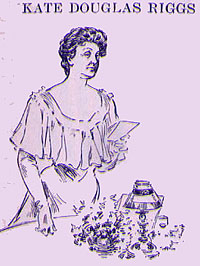

|
 KATE DOUGLASS RIGGS said: WHO are these thy servants, the feminine contingent, that they are asked to add a soprano note to the paean of praise wafted to our distinguished guest? Does it mean that our host believes there is no sex in literature? I hope not, for when a male author assures me that such is his belief I always feels that he is delivering an oblique compliment to himself, and at the same time assuring me that if we persevere we may ultimately reach his level. Flattering as is this assurance I always feel moved to deny its validity. There is sex in literature, and, to my mind, the book of a woman, when it achieves the highest point of excellence -- in subtlety, finish, grace, delicacy, insight, even strength -- reaches it by those qualities of mind and heart that are distinctly her own. There is no use in depressing women by reminding them that they haven't produced a humorist, and there could never be a feminine Mark Twain! Of course not! And, if it were possible, how she would dislike to have her seventieth birthday blazoned to a carping universe when she didn't look a day over sixty-nine! When, then, I repeat, have the ordinary usages of American banquets been abandoned, and why is the voice of woman heard to-night at Delmonico's? In a very old book, written by a Baptist minister, I found the other day this artless remark, "In order to understand the sphere of woman we must first consider the needs of man," but frankly, though we may often have been needed as after-dinner speakers, we have hitherto never been asked. In the siege of Nottingham, two or three centuries ago, the women used to go about in bands of forty to put out the smouldering fires lighted by the enemy. Perhaps we are called upon tonight, by virtue of the well-known absence of humor in women, to quench the flames of masculine wit, and to give our brothers a moment's rest from their own pyrotechnic brilliancy. I only wish that the old siege customs still prevailed, so that my maiden speech might be made in chorus, by a Nottingham "band of forty," for my unaccustomed position reminds me of an argument I once heard on the terrors of shyness. "It is like the madness of a wild animal tamed," said the man. "No," said the lady with feeling, "It is like a tame thing driven wild." But, above all, I must not even seem to be humorous, or wave my minnow's fin when there is a Triton at table. A camel walking by the river's brink thinks his own hump a respectable size until he spies the reflection of the mountain just beside it. Then the elevation of his own person, which seemed to be so striking a moment before, dwindles into insignificance. The Dean of humorists is our guest of honor; his heart and his work as full of sap and salt and savor as when he and Tom Sawyer first dawned upon us, immortal and twin born. Nature was in an extravagant mood when Mark Twain was ushered into this workaday world. She must have created him just for pure joy, -- in a spasm of irrepressible prodigality for which I imagine thousands of stupid boy babies born on the same day had to suffer, so that the balance might be kept even. He has done his work as Nature did hers, flinging it off in a kind of joyous recklessness, charming the English-speaking world, and captivating the rest of the universe even when undone into French or German or Italian. As I scribbled on his dinner-card once long ago: The most of us can manage, justThose of us here who are native to the soil look back with pride to a little group who blazed the trail of American literature -- Washington Irving, Hawthorne, Emerson, Holmes, Whittier, Longfellow, and Lowell. We may well be proud of them, for they were all true artists, true Americans, and, what the gods to not always stop to bother about -- true men. Into this goodly company by direct line of descent walks, on his seventieth birthday, Mark Twain -- Mark, monarch of mirth-makers! The "mirth cure," recently advocated by a French physician, is really not so novel a thing, for it is thousands of years since the great king of Israel declared that a merry heart doeth good like a medicine, while Shakespeare speaks of that "merriment which bars a thousand harms and lengthens life"-- not the life of the mirth-maker alone, but of all who brush his garments. Dryden was right when he said: "Nature, in zeal for human amity,Think of the joys Mark Twain has divided with the world! oh, thrice fortunate man to make tired, sad, weary, dreary people smile and laugh, and only at wholesome things and thoughts! Think of being brother to a skylark caroling above the morning mist, the fireglow on a rainy day, or the sunny glance of a child. How much more there is in this merrymaking than meets the superficial eye. The best jester may so easily be the teacher, the preacher, the magician, the philosopher. Once upon a time, says a twelfth-century church legend, there dwelt in France a strolling player, juggler, dancer, tumbler, what you will, who made his living by the exercise of his art. He was a merry fellow, who danced and tumbled for pure joy of life, and wherever he went a trail of laughter followed him! Youngsters shrieked with glee and toddled into the streets, clapping their fat hands at his approach; staid fathers stopped their work, and busy mothers ran to the door with their babes in their arms that they might catch the sparkle of his eyes and the gleam of the white teeth behind the laughing lips. His merry heart made a cheerful countenance in all who saw him; his presence was a continual feast, and the coppers men threw him would have been well spent had they been gold pieces. Now this merry tumbler had a heart full of faith and reverence, and seeing how valuable men deemed the talents God had given him, he resolved to offer them up in thanksgiving to the source from whence they came. So he sought out a monastery, and being admitted as one of the ministering brothers, resolved to spend the remainder of his life in worship of the Queen of Heaven. But, alas, while learned priests and deacons might engage in the religious services, he had no part among them. He wandered disconsolate through the old gray building, and at last in a desolate crypt found a forgotten altar with a dusty image of the Virgin set upon it. Here was an opportunity for service, alone and unseen. What could he do here to pleasure the Blessed Lady? Ah, he knew nothing so well as the merry pranks that had made him famous and beloved; would the holy Mother accept them, if he but performed them with the full perfection of his art? So he threw his robe upon the damp stones, and in the dusk, before the deserted altar, began his songs, his quaint dances, his daring leaps and falls, with all the ardor of religious enthusiasm. Day after day the strange service was continued, until the poor tumbler, overcome by fatigue and emotion, sank into a swoon, and, being missed by the monks, was finally tracked to the lonely altar. They entered eagerly, tapers in hand, but their lights were dimmed by the radiance that suffused the crypt, for, as they stood in awe and wonder, above their prostrate brother hovered the Queen of Heaven herself with a sky full of attendant angels. Behold, the tumbler (but in a deeper, truer sense the eternal mirth-maker) canonized! Hail, Saint Tumbler! and hail, too, Mark Twain! Mark, Monarch of Mirth-makers, good artist, good friend, good American, good man! Long may you hold the place given you by the fairies when you first laughed in your mother's arms and she laughed back again, -- first and highest place in the American brotherhood of the ever-blessed Saint Tumbler! |